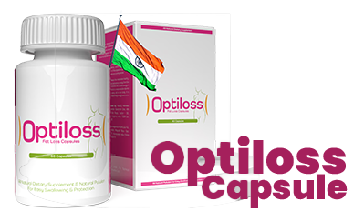
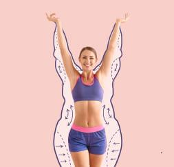

Hello. I am Dr. , Director of the Department of Health in Bengaluru. Today, I am delighted to present to you a major advancement in modern science: the natural formula Prolipol . The recommended dosage is two capsule per day, preferably before meals. Don't let their simple appearance fool you. ; their effectiveness is incredibly powerful.
Thanks to this formula, you will quickly, 100% safely and effortlessly eliminate excess fat. Your body will suddenly become slim and toned, as if you exercised every day and followed a strict diet, but you don't need to do all of this.
Moreover, you will turn all body fat into energy! It seems like a miracle ? A little, but it's not a miracle. It's pure science.
"I eat like an ogre and I'm as thin as a stick !"
In our company, we have a canteen where you can take whatever you want and pay by weight. Since I started using this prolipolic formula, about a month ago, I eat there and take whatever I want: potatoes, steaks, pasta... And I never forget dessert: pudding or cream. Delicious!
My colleagues, who used to make fun of me for being overweight, now eat salads and low-fat yogurts. Hungry and frustrated. And I'm full and satisfied! A new neighbor in the foyer, still quite young, asked me if I was a sports coach because of my figure at my age. I was surprised!
Aditi Acharya, 51 years old, accountant in Bengaluru
Lost 48 kg in 7 weeks.
Better than liposuction
Scientists jokingly call the prolipolic formula "Liposuction in a Bottle." In reality, its effects may be comparable to those of surgical liposuction. However, the prolipolic formula for weight loss has several advantages over liposuction:
- Doesn't cost a fortune
- Does not present any health risk
- Is really effective
SURGICAL LIPOSUCTION

- Costs at least ₹90,000
- Each operation only concerns one part of the body
- Allows you to lose about 4 kilograms
- The removed fat is disposed of
- Requires hospitalization and medical care
- The operation may cause side effects: pain, swelling, burning
- Nécessite un régime pauvre en calories après l’intervention
- Requires sports activity after surgery
PROLIPOLIC FORMULA
- No high costs, as it is reimbursed
- You lose weight all over your body
- You lose as much weight as you want, up to 10 kg in 3 weeks
- Body fat is converted into energy
- You lose weight comfortably at home
- The formula is 100% safe, does not cause side effects and does not interact with other treatments
- Requires no change in diet or eating habits
- Does not require additional physical activity or physical exertion
It doesn't matter why you're overweight, what matters is that you want to get rid of it
There's no single cause of being overweight. There are many. Maybe you're eating too much and exercising too little. You could have hormonal problems or illnesses that cause weight gain. Maybe you need to take steroids or obesity is in your genes. These are reasons why it's sometimes impossible to lose weight with diet and exercise alone. And you know what?
It doesn't matter. With the Prolipolic formula, the source of your excess weight doesn't matter. Here, adipose tissue is the main actor. It is targeted and the formula acts mercilessly... As a result, you lose weight quickly, easily and pleasantly.
It doesn't matter how overweight you are. Whether you want to lose 7, 17, or 77 kg, you'll be able to do it without any problems. The more weight you want to lose, the more you should take the Prolipolic formula, which is completely safe.
Firm skin on the road to slimness: the secrets of our product
not only helps you lose excess weight, but also actively prevents sagging skin. With its help, you can achieve the desired results without worrying about loss of skin elasticity. Our product formula contains components that help improve skin elasticity and nutrition, while maintaining its tone, even during rapid weight loss. We ensure that your journey to slimming is comfortable and safe, and with our product, you can be sure that your skin will remain elastic and beautiful.
One capsule can eliminate up to 100 fat cells.
The prolipolic formula is so effective at burning fat because it works at the cellular level. One capsule contains up to 100 smart molecules, which dissolve fat cells with the precision of a laser. These molecules are programmed to enter fat cells just 4 seconds after they are absorbed by the body. Then, a very simple reaction takes place inside.
When a smart molecule from the prolipolic formula reaches a fat cell, it penetrates inside and bombards it from the inside. Then, The fat cell is broken down into 3 parts: an energy unit, water and carbon dioxide. What does this mean?

This means that by taking the prolipolic formula, you turn unwanted fat into energy. You'll strengthen your muscles and brain, and you'll feel more vital and optimistic. No effort will be a problem for you. You'll no longer be tired, sweaty, or out of breath when climbing stairs or walking to the bus stop. You'll feel light, and physical activity will become a real pleasure for you.
And what about the byproducts of fat cells, namely water and carbon dioxide? You eliminate water through urine, and carbon dioxide through breathing. It's an absolutely efficient and brilliantly simple process!
"I already have sculpted abs without ever setting foot in a gym."
I bought this treatment for my wife. I must admit I laughed at her when she first started taking it. Who would have thought capsules could burn fat? But when I saw she'd lost over 20 kg, I stopped laughing. She has a flat stomach and toned legs. A completely transformed woman. Next to her, with my belly, I looked like a monster.
I started taking them too. I swear I now have well-defined abs. But it's not because I stopped drinking beer or watching football games with pizza or fries. My coworkers don't believe me when I say I don't go to the gym. But I don't. Why would I?
Ravi Nair, 37 years old, bus driver from Jaipur
Lost 22 kg in 4 weeks.
See how simple it is:
Take one prolipolic formula capsule twice a day with a glass of water.
It only takes 30 seconds. Take one capsule in the morning and another in the evening with 200 ml of water. Very quickly, your fatty tissue will start to turn into energy. You won't even need your morning coffee anymore!
Burn fatty tissue.
You'll clearly feel more energized and lighter. Fatty tissue will literally begin to evaporate from your body. Don't forget to wear a belt, because by evening, your pants might already be too baggy. It's that quick!
Enjoy a slim and toned body.
After 3 weeks, your scale will show 10 kg less, or maybe even more! There will be no trace of cellulite. Your skin will be firm and smooth. You will be able to wear smaller sizes and receive compliments. People will ask you:" How do you eat what you want and still lose weight instead of gaining it?". Prepare to answer this question… If you want to lose even more weight, continue using the formula and lose up to 100 kg effortlessly.
"I'm living a second youth!"

I was already menopausal, so we know that metabolism slows down. On top of that, I was taking medication, steroids. I was very sick and as fat as a sumo wrestler. I went from nutritionist to nutritionist, from doctor to doctor. And they all told me the same thing. That I wouldn't be able to lose weight, that that was just the way it was and that I had to accept it. One doctor even laughed at me when I asked him if I should try this treatment. He told me the only thing I would get was a bad case of diarrhea...
But when I went back to see him after two months, 41 kg lighter, he was speechless. He didn't know where to hide anymore, out of shame.
They wanted to convince me there was no hope for me. I was afraid I'd get so fat they'd need a crane to get me out of my house. But I took matters into my own hands. I'm slim and I'm living a new lease on life! It was worth it!
Ishita Raghavan, 68 years old, retired from Chennai
Lost 41 kg in 8 weeks.
This is very important: Visceral fat will no longer shorten your life
Visceral fat is the fat that accumulates in your abdomen and chest. This fat adheres to your organs, such as your heart, lungs, kidneys, liver, and pancreas. Excess of this fat is extremely harmful to these organs and prevents them from functioning properly. Additionally, this fat accumulates heavy metals and toxins that poison your body.
Visceral fat and the harmful substances it contains damage your body's major organs. Your heart has less and less power to pump blood, and your kidneys can no longer purify it. That's why it's so important to reduce visceral fat. For years, scientists have been warning that excess visceral fat reduces life expectancy by an average of 14 years.

The Prolipol formula will eliminate deadly visceral fat from your body, as well as heavy metals and toxins. Your organs, freed from fat and purified of toxins, will be extremely grateful. You will have at least 5 times more energy and feel 20 years younger!
Adipose tissue literally melts like... butter in a pan
Imagine putting butter in a hot pan. See how the fat melts? Well, that's exactly how your fatty tissue will disappear when you use the Prolipol formula.
I repeat it once again:
- No diet required
- No sporting activity necessary
- No changes in your life required
The Prolipol formula acts directly on fat cells, making it the only revolutionary and effective method for losing weight.
100% safety for your health
The fat-dissolving molecules in the Prolipol formula work intelligently. They are “programmed” to act only on fat cells. These molecules are invisible to other cells in the human body. This is a very important advantage. Therefore, the risk of the Prolipol formula harming your body is 0%. This is 100% guaranteed and confirmed by a certificate of safety and naturalness.
Another very important advantage of the Prolipol formula, especially for women, is that it eliminates 100% of cellulite after only 3 days of use!
"Nobody believed I would make it..."

After my pregnancy, I couldn't get rid of the fat on my stomach and hips. I also had a double chin. My mother, my aunts, and all my friends told me that this was what women's bodies were like... That I should take care of my husband and son instead of crying because I didn't have a slim figure. Seriously? I'm not that old, and with these curves, I had no desire to show off at the pool or on vacation. I don't know what I would have become if I hadn't read the article about this treatment. After a month, I'm as slim as I was before my pregnancy. In fact, even better, because before, I had cellulite and slightly loose skin.
Now I'm toned, as if I trained every day with Patry Jordán. Hahaha.
Ananya Singh 33 years old, teacher in Jaipur
Lost 19 kg in 4 weeks.
Thanks to the Prolipol formula:
You'll begin to transform all the fat stored in your body into vital energy. Admit it, it's a remarkable change.
You will eliminate 100% of cellulite in 3 days and start losing weight at a rate of 10 kg in 3 weeks. You'll never be ashamed of your body again. You'll be able to proudly show yourself off at the beach, pool, or sauna, without embarrassment. You'll be able to wear whatever clothes you want, not just the ones that fit.
You save your health! You'll eliminate deposits, toxins, and heavy metals from your body. You'll no longer be eaten away from the inside. Most importantly, by losing excess weight, you'll relieve your joints and prevent their degradation. You'll normalize your blood sugar and cholesterol levels. You'll protect yourself from diabetes, arteriosclerosis, strokes, and more. You'll simply prolong your life.
There are no more obstacles to finally becoming slim
You certainly don't like being hungry and having to give up the pleasure of eating. You want to eat what you like, not just what's allowed. Should this be an obstacle to getting slim? Not anymore!
You can enjoy your favorite dishes and desserts while wearing a size S. You'll no longer have a single millimeter of cellulite on your buttocks and thighs. You can finally be a happy, healthy person with a slim body. And that in just 21 days!
I don't want to discourage you from exercising, but... You now have a method that allows you to burn fat without training. Your body will be so athletic that people will think you go to the gym or run every day.
In summary: The Prolipol formula for weight loss:

Is easy to use: Simply take one capsule with 200 ml of water, which only takes 30 seconds a day.

Works regardless of gender, age, causes and duration of overweight.
Guarantees drastic weight reduction: at least 10 kg in 3 weeks, while firming the skin and completely eliminating cellulite.

Requires no diet, workout or lifestyle changes.
Protects health against serious diseases caused by overweight and detoxifies the body of toxins.

Is 100% safe for the body and does not cause any side effects.
Your guarantee of victory in the fight against excess weight
The Prolipol formula burns fat faster than diets and training. It works regardless of the amount of excess weight, the causes of excess weight, or its duration.
Smart molecules, developed after more than 20 years of research, represent a true revolution in medicine. Thanks to them, you benefit from an absolute guarantee of satisfaction when choosing this treatment.
GUARANTEE OF EFFECTIVENESS
The effectiveness of the Prolipol formula for weight loss has been undoubtedly proven in 27 laboratory studies. It has been rigorously analyzed in 9 research centers around the world. More than 30,000 people who have already lost weight thanks to this formula confirm its effectiveness.
QUALITY GUARANTEE
The product contains the unparalleled Prolipol formula, which burns fatty tissue. You can be sure that you are receiving an original formula, available only on the official website of the Asian Ministry of Health.
SECURITY GUARANTEE
The Prolipol formula treatment has been specially designed to act only on fat cells. It does not affect any other cells in the human body. Scientific research clearly shows that the risk of side effects after treatment is 0%.
Everyone deserves health and beauty
If the Prolipolic formula had been developed a few years ago, it would have prevented a lot of suffering. How many people have suffered from diabetes or arteriosclerosis due to excess weight and died prematurely? How many still suffer from joint pain, sleep apnea, a weakened heart... How many struggle every day with complexes or depression caused by the repeated failure of their diets?
Fortunately, all that is over! The suffering is over. Everyone deserves a slim, healthy body. Everyone deserves to be proud of their appearance.
A weight loss method ten times better than all others combined
Did you know that...
A year ago, a scammer exploited the Prolipolic formula to make money, tricking people into believing it helped them lose weight. A scientist, a former employee of the Asian Ministry of Health, stole the formula from the laboratory.
The worst part is that this scammer posed as a healer. He used the formula to perform "weight loss rituals" and told people he was healing them with his supernatural powers. He was asking for up to $10,000 for this.
You no longer need to spend a fortune to lose weight effectively and regain your health.
Fortunately, you no longer need to spend ₹70,000+ to lose weight. Starting tomorrow, you can have the Prolipolic formula at home and start losing 10 kg in 3 weeks, all at a minimal cost.
We marketed the formula in India under the name of . The cost only covers the extraction of the smart, fat-burning molecules. Until now, you had to pay full price for treatment.
However, you benefit from a 50% discount, which allows you to get the treatment at half price. Thus, money will not be an obstacle on your way to a slim, uninhibited, healthy body filled with positive energy.
It's up to you to decide: do you want to lose up to 10 kg in 3 weeks without effort?
Start changing for the better. Get what you deserve: health and a happy life. Fill out the order form to receive the Prolipolic formula with a non-refundable financing offer.
I guarantee that in 21 days you will look in the mirror and see a person who has lost 10 kg. You will smile and see the happiness in your eyes. You will say to yourself: "YES, that was the right decision!" And you will be extremely grateful.